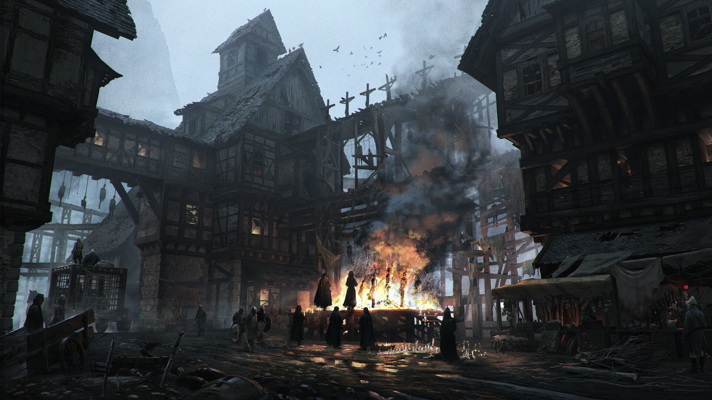
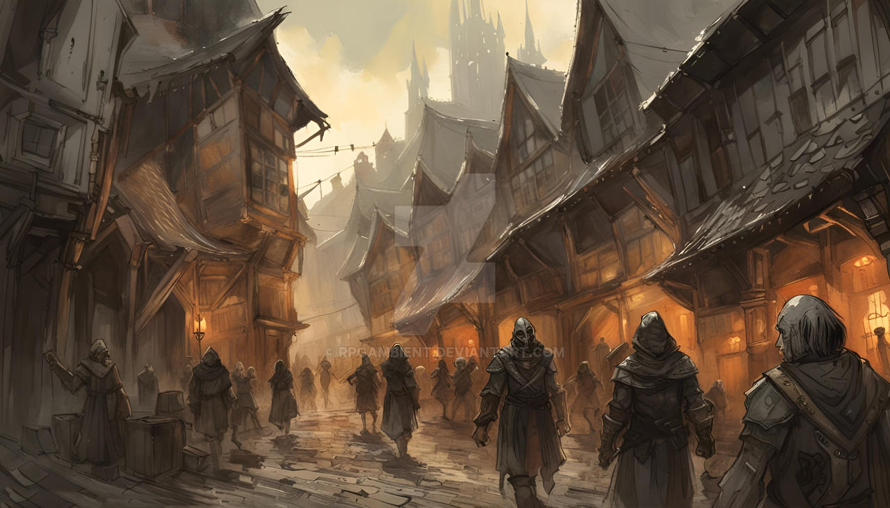
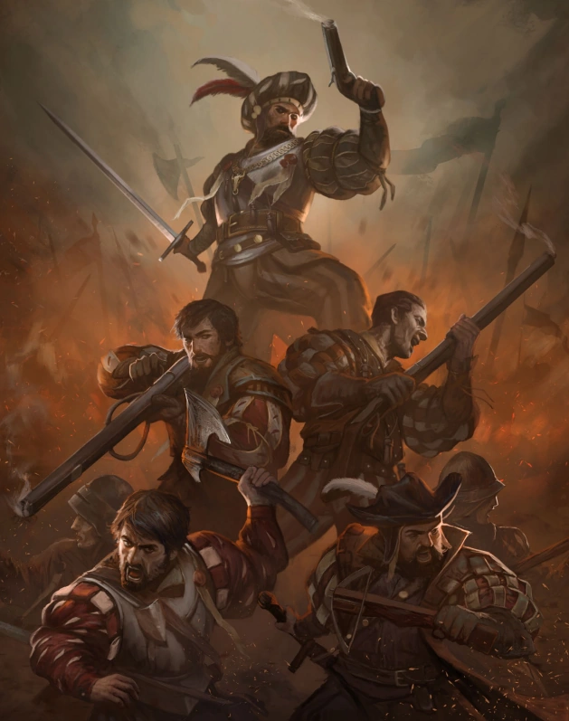

Morgstadt
Morgstadt je žoldácké město, které po neshodách s Garagorem a jeho značném odlivu Nížínných
trpaslíků (klan trpaslíků, zaměřující se na kování a výrobu zbraní), kteří narozdíl od městských
nespravovali tamnější banky, vyhlásilo nezávislost.
Morgstadt je spravován třemi obchodními společnostmi, které mezi sebou udržují rovnováhu a nějakým
způsobem se podílejí na jeho řízení. Nicméně v něm však žije spousta gangů,
Morgstadt – město bahna, stínů a zlata
Morgstadt je jako řezná rána na tváři Varky — stará, mokvající, ale překvapivě bohatá.
Leží na soutoku řek, kde se voda barví do šeda a vzduch je věčně těžký od kouře, rzi a výparů z
alchymistických dílen.
Na první pohled to vypadá, jako by se celé město rozpadalo — omítka opadává ze zdí, šindele visí z
krovů a stékající voda čistí jen to, co právě rozleptává. Ale ten, kdo se dívá jen očima, nikdy
nepochopí, co se tu děje doopravdy.
Uličky Morgstadtu jsou úzké, klikaté, a každá z nich může být tou poslední, do které zabloudíte. Ve
stínech se pohybují postavy, které nevypadají, že by vás chtěly okrást – spíš znehybnět navždy. Ale
za tím vším se skrývá pulsující srdce obchodu. Nelegálního i legálního. Morgstadt totiž nikomu
nepatří. A právě v tom spočívá jeho síla.
Nad temnými střechami ční černé komíny cechovních sléváren, a za zapečetěnými branami sídlí
nezávislí obchodníci, pašeráci, alchymisté i ti, kteří nechtějí být nikde evidováni. Tady se zbraň z
Tarkiru prodá dřív, než se jí dotkne slunce. Tady se artefakty zakázané v Garagoru běžně používají
jako světla v domácnostech. A tady proudí zlato — dost, aby se město nepropadlo samo do sebe.
s
Nikdo Morgstadtu nevládne, ale všichni ho chtějí ovládnout.
A právě proto je tu každý vítán — do té doby, než začne být problémem.
Dobrodružství, která se zde odehrála:
Morgstadt na mapě
Morgstadt
Morgstadtské uličky
Morgstadtská milice